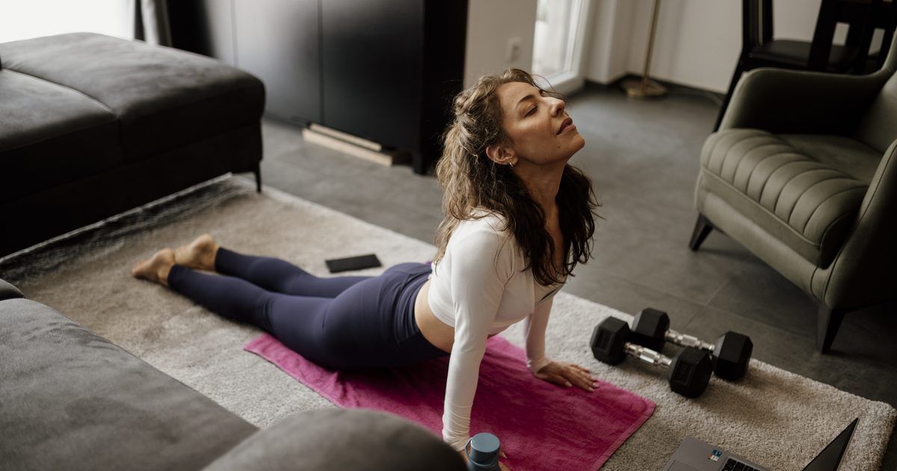

Minimal Gear
Ab Wheel: Progressions and Whether You Need One
The ab wheel is one of the hardest core exercises available and one of the most commonly bought before anyone is ready for it. The progression matters more than the wheel.

An ab wheel is a small wheel with two handles. You kneel, roll it forward until your body is extended, and pull it back. It is among the most demanding anti-extension exercises available and it costs very little.
It is also, in most homes, an object that got used twice and now lives under a sofa — because it is far harder than it looks and most people who buy one are not ready.
What the rollout actually trains
Anti-extension: the trunk's ability to stop the lower back arching under load. As the wheel rolls away, gravity tries to pull your hips toward the floor and extend your spine, and your abdominals resist it.
This is the same function a plank trains, at a much higher intensity. A plank holds a fixed lever length; a rollout progressively lengthens the lever through the movement, so the demand increases continuously to a peak at full extension.
That makes it an excellent progression from planks and dead bugs — the four trunk functions are set out in core training without sit-ups.
Are you ready for one?
Three tests. If you fail any, work on the prerequisites first.
- A solid one-minute forearm plank with no sagging — see the plank progression chart.
- Three sets of ten dead bugs with the lower back staying flat throughout.
- A 30-second hollow hold with straight legs.
If those are comfortable, a wheel is a sensible next step. If they are not, the wheel will simply be performed with a sagging lower back, which trains the spinal erectors under load rather than the abdominals — and is the mechanism behind most reports of lower back pain from this exercise.
The five-stage progression
Stage 1 — Kneeling partial rollout. Kneel with the wheel under your shoulders. Roll forward only as far as you can go while keeping your lower back flat, then pull back. That may be twenty centimetres at first, and that is the correct distance. Three sets of eight.
Stage 2 — Kneeling rollout to a wall. Kneel facing a wall with the wheel about forty centimetres from it. Roll until the wheel touches the wall. Move the starting position back a few centimetres each week — a precise, self-limiting progression. Three sets of eight at each distance.
Stage 3 — Full kneeling rollout. Full extension from the knees, arms overhead, body in one line, then back. Three sets of eight to twelve. Most people should stop here permanently; this is a genuinely hard exercise and there is no obligation to progress past it.
Stage 4 — Standing partial rollout. From standing, hinge and roll partway out, then pull back. A large jump from kneeling — expect very little range at first.
Stage 5 — Standing rollout. Full extension from standing. Genuinely advanced, and not a goal most people need.
Form, and the one mistake that matters
Tuck the pelvis before you start. Squeeze the glutes and tilt the pelvis so the lower back is slightly rounded rather than arched. Hold that throughout. This is the whole exercise.
The mistake: letting the lower back arch as you extend. When that happens, the abdominals have stopped resisting and the spine is taking the load in extension, which is the position most likely to produce back pain.
How to know: you will feel it in the lower back rather than the abdominals. If you feel it in the lower back, you have gone beyond your current range — shorten it.
The distance you can roll while keeping your lower back flat is your range. Not the distance you can roll. Rolling further with a sagging back is not a harder version of the exercise; it is a different and worse one.
Programming it
Two or three times a week, three sets, at the end of a session — core work goes last, for the reasons in how to structure a home workout.
Six to twelve repetitions. Since load is fixed at your bodyweight, proximity to failure is the intensity variable, and light loads taken close to failure produce comparable adaptation to heavy ones.1 But failure here means form breaking, not the point where you physically cannot return — and those are different points.
Expect substantial soreness after the first session. That is normal for a novel eccentric-loaded movement and not a sign of injury.2
Do you actually need a wheel?
No, and this is worth saying since it is a purchase.
Furniture sliders under your hands produce nearly the same movement for less money and more versatility — see furniture sliders for core and leg training. A towel on a hard floor does the same for nothing. A slider body saw and a slider pike train the same function well.
The wheel's advantages are that it rolls smoothly on any surface including carpet, and the fixed handle spacing is more comfortable at full extension. Both are real and neither is essential.
If you already have sliders, you probably do not need a wheel. If you have neither and want one item, sliders are the more useful purchase — the buying order is in the minimalist home gym guide and the best cheap home gym equipment.
Choosing a wheel, if you buy one
There is not much to get wrong, but three details matter more than the marketing does.
Wheel width. A single narrow wheel is less stable and adds an anti-rotation demand; a wide or double wheel is more stable and lets you focus purely on the anti-extension work. For a first wheel, wider is better, because instability becomes the limiting factor before your abdominals do.
Handle comfort. At full extension your entire upper body weight goes through two handles. Foam or rubber grips are worth having; bare plastic is unpleasant after a few sets.
Bearing quality. A wheel that judders rather than rolling smoothly makes controlled movement harder, which matters when control is the whole exercise. This is one of the few places where the cheapest option is a false economy.
What does not matter: built-in resistance mechanisms, spring assistance, and anything with a knee pad attached. The pad is genuinely useful, but a folded towel does the same thing.
Two exercises that train the same thing
If you decide against a wheel, or want to build toward one, two movements train anti-extension at a similar intensity.
The slider body saw. Forearm plank with your feet on sliders, pushing back a few inches and pulling forward while keeping the body rigid. The lever lengthens as you push back, which is the same mechanism as a rollout with the load at the other end. Easier to scale precisely, because you control the distance directly.
The long-lever plank. A standard forearm plank with your elbows walked forward ahead of your shoulders. No equipment at all, and a considerably larger jump in difficulty than it looks — expect your hold time to halve. This is stage six of the plank progression chart and the natural precursor to any rollout work.
Both are worth doing regardless of whether you own a wheel. Weekly volume drives adaptation,4 and having three ways to train the same function makes it easier to accumulate that volume without the exercise becoming stale.
Where to go next
For the prerequisites, see the plank progression chart. For the full range of trunk training, see core training without sit-ups.
Frequently asked questions
Is the ab wheel good for beginners?
No. It is among the hardest anti-extension exercises available. You should have a solid one-minute plank, three sets of ten dead bugs and a 30-second hollow hold before buying one, or the movement will be performed with a sagging lower back.
How do I progress the ab wheel rollout?
Kneeling partial rollouts first, then kneeling rollouts to a wall with the start position moved back a few centimetres weekly, then full kneeling rollouts. Standing versions are advanced and unnecessary for most people.
Why does my lower back hurt after ab wheel rollouts?
Almost always because the lower back is arching as you extend, which means the abdominals have stopped resisting and the spine is taking the load. Shorten the range to the distance you can roll while keeping the back flat.
Do I need an ab wheel?
Not really. Furniture sliders under your hands produce nearly the same movement for less money and more versatility, and a towel on a hard floor does it for nothing. The wheel rolls more smoothly on carpet and is more comfortable at full extension.
How many ab wheel rollouts should I do?
Three sets of six to twelve, two or three times a week, at the end of a session. Failure here means your form breaking rather than the point where you physically cannot return — those are different points.
Sources and further reading
- Schoenfeld BJ, Grgic J, Ogborn D, Krieger JW. “Strength and Hypertrophy Adaptations Between Low- vs. High-Load Resistance Training: A Systematic Review and Meta-analysis.” Journal of Strength and Conditioning Research, 2017;31(12):3508–3523. PubMed.
- Dupuy O, Douzi W, Theurot D, Bosquet L, Dugué B. “An Evidence-Based Approach for Choosing Post-exercise Recovery Techniques to Reduce Markers of Muscle Damage, Soreness, Fatigue, and Inflammation: A Systematic Review With Meta-Analysis.” Frontiers in Physiology, 2018;9:403. PubMed.
- NHS. Strength and Flex exercise plan.
- Schoenfeld BJ, Ogborn D, Krieger JW. “Dose-response relationship between weekly resistance training volume and increases in muscle mass: A systematic review and meta-analysis.” Journal of Sports Sciences, 2017;35(11):1073–1082. PubMed.
Comments
Comments are not enabled yet. Add a hosted comment embed (Disqus, Commento, Giscus) inside this container when you are ready.